How to Use Help
Select a topic in Contents or type in Search. Underlined links open the referenced topic.
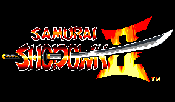
K
Contents
About Options
About the Messengers and Items
Characters
Samurai Shodown Prologue
Shiro Tokisada Amakusa, who sent a peaceful world spiraling down into a whirling catastrophe, is now defeated.
However, Ambrosia, the Sorcerer of Darkness who manipulated Amakusa from the darkness of
the Netherworld has not given up his return to this world.
One eve, after many years have passed since the defeat of Amakusa,
Haohmaru was assailed by someone
in the dark street. However, Haohmaru is not a man that can be easily defeated.
He instantly caught hold of the villain and held him down.
The villain said to him spitefully, “I’ll steal your soul eventually...Glorious return of Ambrosia...”
After Haohmaru heard the villain’s utterance,
his eyes glimmered for a moment. “Could Amakusa be ...? Or ...”
Controls Description
Names of buttons used during the game
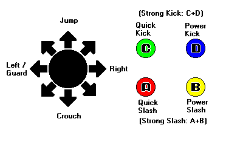
Control stick Used to manipulate the character.
Select button Used to pause the game.
Resume game by pressing it once after the game is paused.
Start button Used to start a game or to intervene an ongoing game to introduce a new participant.
A button Weak attack by sword or without a weapon (slash/weak slash)
B button Power slash and power kick (slash/medium strength slash)
C button Quick kick (kick/quick kick)
D button Strong kick (kick/medium strength kick)
Press buttons A and B simultaneously Strong slash (slash/strong slash)
Press buttons C and D simultaneously Strong kick (kick/strong kick).
When using a joystick or a game pad
4 Button Joystick/Game Pad (Analog Specification)
Buttons A/B/C/D can be assigned using the Controls Property. The [Start] button and the [Select] buttons are substituted by the keyboard.
For analog specification joystick/game pad, 2 controllers cannot be connected at the same time.
Joystick/game pad with more than 6 buttons (Digital Specification)
In addition to the buttons A/B/C/D, combination buttons of [A + B] and [C + D], and the [Start] button can be assigned using the Controls Property.
More than two controllers can be used for the digital joystick/game pad. Please refer to the joystick/game pad manual that you are using.
Character Control Method Using the Keyboard
Player 1 side
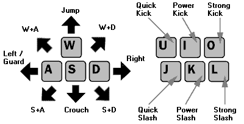
[Start] button......Space bar
Player 2 side
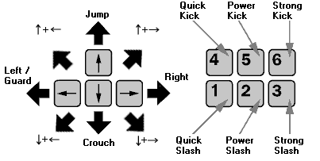
[Start] button......Enter key
* Setting is by default. The key setting can be changed using the Controls Property.
* The game can be paused using the [Pause] key. In addition, using another application will automatically pause the game. Press the key that is used in the game to resume the game.
How to Start the Game
1. Call the title display
Properly insert the disk into the CD-ROM.
Auto-run screen will be displayed.
Select [Play].
2. Select [Game Start] option.
After selecting [Play] from the title display, the game screen will be displayed.
Choose [GAME START] with the joystick and press button [A].
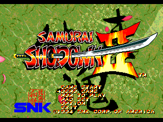
Menu Description
GAME START ......Start the game.
DEMO GAME ......Start auto-demonstration.
HOW TO PLAY ......Explains how to play the game.
PAD SET ......Allocates buttons for the game.
OPTION ......Setup Game Options.
EXIT ......Exit the game and return to Windows.
3. Select Character
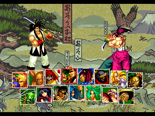
Choose a player from 15 characters using your joystick and press button [A] to enter your selection.
If there are 2 players, then select and determine the player character in the same way from the Player 2 side.
Player 1 and Player 2 can select the same character.
4. Start the game!!
About Options
Select [Options] from the title display using the joystick and press the [A] button to switch to the [Options] display. Select an item with the joystick and make the setting changes by moving left/right with the joystick.
Detailed descriptions will be displayed when an item is clicked on.
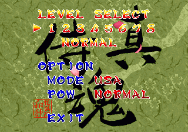
Level Select
8 Different levels can be set when playing against the computer. Select the level number by using the A/B buttons.
LOW 1 2 3 4 5 6 7 8 HIGH
(The level of difficulty increases as the number increases)
Rage Gauge Setting
Sets up the Rage Gauge of the game. Select either the [NORMAL] (normal) or the [MAX] (always full power) using the A/B buttons. However, this setting can only be done in the 2 player [Options] setting.
Mode Select
There are 3 language modes available for the display language; Japanese (JAPAN), English (USA), and Spanish (SPAIN). Make your selection using the A/B button.
EXIT
After setting up the options, you can return to the Title screen by placing the cursor here and clicking the [A] button.
About Properties
The [Properties for Samurai Shodown] setup window will be displayed when [Options] from the window menu is selected. Click on it with the mouse and change the settings.
Click on an item you want to know about and detailed information will be displayed.
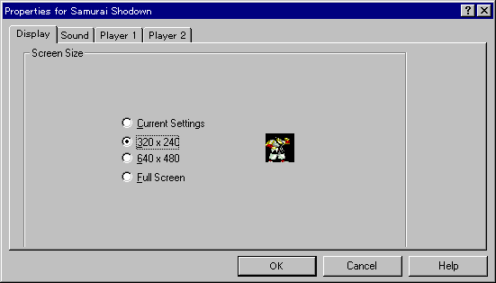
Display Properties
About Properties
When [Options] is selected from the window menu, the [Properties for Samurai Shodown II] setup window will be displayed. Make setting changes using the mouse.
Click on an item you want to know about and detailed information will be displayed.
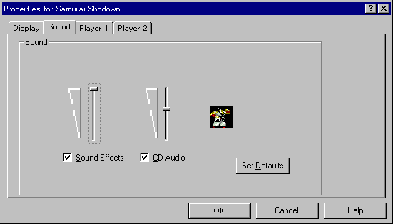
Sound Properties
About Properties
When [Options] is selected from the window menu, [Properties for Samurai Shodown] setup window will be displayed. Make setup changes by using the mouse.
Click on an item you want to know about and detailed information will be displayed.
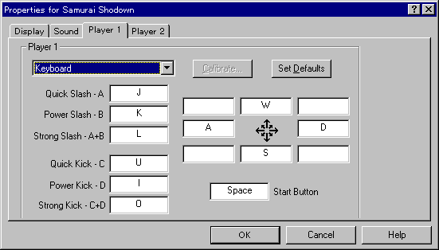
Keyboard Properties
About Properties
When [Options] is selected from the window menu, the [Properties for Samurai Shodown] setup window will be displayed. Make setting changes using the mouse.
Click on an item you want to know about and detailed information will be displayed.
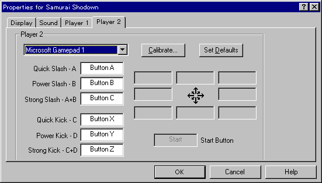
Joystick Properties
Change properties and resume game.
The same result can be obtained when the F5 key is pressed.
The same result can be obtained by pressing the [F6] key.
#
The display will be smaller for some PC-9821 series machines, however, this is not a bug in the program.
The window can be switched to the [Full Screen] mode by pressing the [F4] key.
Diagonal movement can be accomplished by using the buttons simultaneously, however, setting diagonal movement buttons is also possible.
About the Window Menu
Game |
|
|
|
New Game |
Exit game and return to title screen. |
|
Exit |
Exit program and return to Windows. |
Options
|
|
|
|
Display |
Calls the Display Properties dialog box. |
|
Sound |
Calls the Sound Propeties dialog box. |
|
Player 1 |
Calls the control method properties (Keyboard or Joystick) dialog box for Player 1. |
|
Player 2 |
Calls the control method properties (Keyboard or Joystick) dialog box for Player 2. |
Help |
|
|
|
Contents |
Calls this help file. |
|
Search by topics |
Calls the help file search window. |
|
How to use Help |
Displays the how to use help window. |
|
About Samurai Shodown II |
Displays the version information. |
About the Game Display Descriptions
Click on an item you want to know about and detailed information will be displayed.
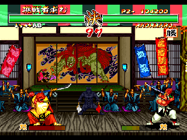
Score Display
The player’s total score will be displayed in 1 Player mode.
The number of opponents that the player beat will be displayed in the 2 Player mode.
Character Name
The character name of the character that the player is controlling will be displayed.
In addition, when the computer character uses a special move, the control method of the special move is displayed here.
Time Remaining
Counts down the time remaining in the fight. When it goes to 0, the fight is over.
Life Meter
The gage decreases as the player sustains damages.
The one whose gage drops to 0 first loses the game.
The Victory Check Mark
This is displayed when you win a fight.
The Rage Gauge
When the player sustains damages the power increases and when it is full, the offense power of the player increases temporarily, and the special move can be used.
Standard Controls
The standard control method of the characters during a fight is as follows. Joystick control can be used when the character is facing to the right. Button positioning (controls setting) can be changed in Keyboard Properties.
Standard Controls and Normal Offense
Special Moves
Step forward (Dash) |
Step backward (Jump back) |
Quickly |
Quickly |
Roll backward |
Take cover |
Roll forward |
Quickly |
Quickly |
Quickly |
Crossed Sword Crunch
When two swords meet and are forcefully pushing against each other, press button [A] or [B] repeatedly. Moving the joystick forward allows you to push your enemy. There are number of ways to end the Crossed Sword Crunch.
Sword Snag
You can grab the opponent’s sword with you bare hands by using this command. Input this command right before the opponent’s sword strikes you. If you are successful, you can throw you opponent.
Command: When the opponent tries to strike you with the sword, turn the joystick (while facing to the right) to grab the sword.
Feint Dash
This is a tricky move which leads the opponent to believe that you are stepping backward when in fact you are stepping forward.
Command: (when facing right)
The Raz Pose
Allow you to move back from your opponent and choose from two ways to raz your opponent. You can challenge the opponent in 2 ways by facing the opponent and pressing buttons [A]+[C] or [B]+[D] simultaneously.(The gages will be not affected).
Hopping
Press buttons [B]+[C] simultaneously. You can avoid the opponent’s attack to your lower body by hopping timely.
2 Player Battles
{bmr bm17.bmp} Press both [Start] buttons for Player 1 and Player 2 to play a 2 player game. In addition, the second player can join the game while the first player is fighting the computer by pressing the other controller’s [Start] button.
About Continue
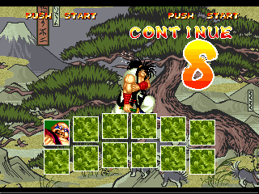
When [Continue] count reaches 0 ----
During a 2 player fight
The game will continue for the winner against the computer automatically.
{bmr bm19.bmp} During a fight against the computer (Save data)
The [Save] selection screen will be displayed. Choose [YES] using your joystick and press the [A] button and save the game data. Only 1 game data can be saved. When you save the data, the data previously saved will be deleted.
Load data
If the game data is saved, then the [Load] selection screen will be displayed before the game starts. Select [YES] and press the [A] button to continue the game previously saved.
About the Edo Express Delivery Man and Items
The Edo Express Delivery Man runs through the stage during a fight and drops certain items. There are two types of items; “Power Items” which regenerates physical strength and a “Dangerous Bomb”.
[Power Items]
Large chunk of meat, small chunk of meat, and the thigh meat.
The amount of regeneration differs depending on the type of meat that you consume.
[Dangerous Bomb]
The bomb explodes after a given time.
You do not sustain any damage if you guard yourself.
About the Rage Gauge
{bmr bm20.bmp}As you receive attacks from the opponent, the rage indicator at the bottom of the screen increases and the letters “POW” gets larger. When the Rage Gauge becomes full, the character’s entire body blazes red with explosive anger! Every move’s strength increases temporarily and your moves become powerful which even allows you to beat your opponent even with a single move.
* The rate of increase of the gage differs for each character. The power status continues for the next round if the game moves into the next round during the power increase period.
Weapon Smash Waza (Move)
When the Rage Gauge becomes full in “Samurai Shodown II”, you can use your “Weapon Smash Waza (Move)” which destroys the opponent’s weapon and inflicts damage to the opponent. If a weapon is destroyed, the umpire, who is cloaked in black, will bring a new weapon out within a specific time range.
Game Rules
The winner of the duel is the one who wins 2 rounds out of 3 before the opponent. All starting calls for the duel and judgments are made by the umpire. Now get out there and go kick some butt!
The winner will be determined when one of the opponent’s Life Meter goes to 0.
When the winner is not determined within the time limit of the duel, the winner will be determined by the amount of strength remaining indicated by the Life Meter.
If the winner cannot be determined using the above criteria, then the duel will be called even.
If no one wins 2 rounds out of 3 rounds, there will be a special final round to determine the winner. The result of the final round will determine the winner.
If a winner cannot be determined even after the final round, then the game will be over.
Haohmaru
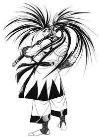
Special Moves
Crescent Moon Slash
|
+slash |
Cyclone Slash |
+slash |
Resshin Zan |
+kick |
Sake Blast |
+A |
Super Cyclone Slash |
+kick |
Weapon Smash Waza (Move)
Flame of the Conqueror |
+A |
All commands can only be used when the player character is facing right.
The special moves written in red cannot be used if you don’t have a weapon.
Genjuro Kibagami
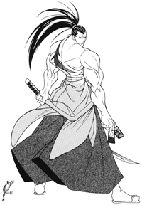
Special Moves
Flash of the Phoenix |
+slash |
Cherry Blossom Mincer |
+slash |
Blast of the Beast |
+slash (3 consecutive times) |
Weapon Smash Waza (Move)
Five Senses Barrage |
+A |
All commands can only be used when the player character is facing right.
Special moves written in red letters can only be used when the character has a weapon.
Cham Cham
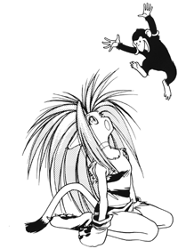
Special Moves
Boomerang Gut Buster |
+slash |
Boomerang Beheader |
+slash |
Flying Lure Snag |
+kick |
Moolie Munch Munch |
+D |
Munch Munch Muskie |
+C |
Piranha Chomp Chomp |
+CD |
Weapon Smash Waza (Move)
Metamolie Animal Attack |
+A |
Joystick control can be used only when the player character is facing right.
Special moves written in red letters can only be used when the character has a weapon.
Special moves written in blue letters can only be used when Paku Paku (monkey) is present.
Caffeine Nicotine
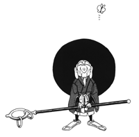
Special Moves
Cane Swirl Cutter |
While
descending from a jump |
Choker Chain Cane Bang |
+slash |
Exorcist Charm Slice |
+slash |
Fires of Fecundity |
+kick |
Curse of Crunch |
+AB |
Weapon Smash Waza (Move)
Underworld Pummeler |
+D |
All commands can only be used when the player character is facing right.
Special moves written in red leatters can only be used when the character has a weapon.
Neinhalt Sieger
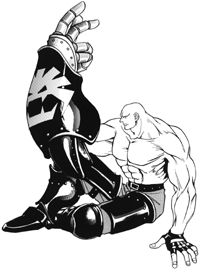
Special Moves
Tigerkopf |
+C |
Falkennagel |
After
Tigerkopf hit |
Elefantglied |
After Falkennagel hit +A |
Blitz Jaeger |
+Kick |
Vulcan Weinen |
+ Continuously hit A* |
Wolf fangen |
+AB |
Fire Storm |
+BC |
* Depending on the number of times the button is hit continuously, the moves change (increase in power) from “Vulcan Weinen” to “Vulcan Drucken” and then to “Vulcan Explosion.”
Weapon Smash Waza (Move)
Operation Tiger |
+CD |
All commands can be used only when the player character is facing right.
Special moves written in red letters can only be used when the character has a weapon.
Kyoshiro Senryo
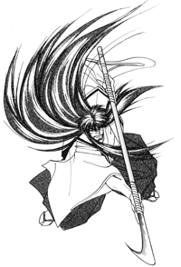
Special Moves
Kabuki Swirl |
+slash |
Flying Lion’s Tail |
+kick |
Dance of Fire |
+slash |
Swirling Dance of the Demon |
+slash |
Blood Mist Slice |
At the summit of jump +AB |
Weapon Smash Waza (Move)
Flesh Flail Dance of Kyoshiro |
+C |
All commands can only be used when the player character is facing right.
Special moves written in red letters can only be used when the character has a weapon.
Jubei Yagyu
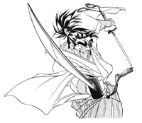
Special Moves
Sabre Thrash |
Repeatedly hit slash button |
Tsunami Saber |
+slash |
Geyser Thrust |
+slash |
Yagyu Shingantou |
+A |
Weapon Smash Waza (Move)
Shooting Star Swipe |
+C |
All commands can only be used when the player character is facing right.
Special moves written in red letters can only be used when the character has a weapon.
Hanzo Hattori
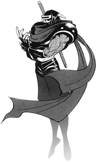
Special Moves
New Reppu Shuriken |
During
jump |
Ninja Dragon Fire |
+slash |
Ninja Teleportation Jig |
+BCD |
Ninja Teleportation |
Push BCD while incurring damages |
Shirke Dash |
Get close to the opponent +kick |
Ninja Multiplier |
+A or B |
Triangle Jump |
Jump and reverse joystick direction at the corner of the screen |
Weapon Smash Waza (Move)
Squeeze of Heaven |
+D |
All commands can only be used when the player character is facing right.
Special moves written in red letters can only be used when the character has a weapon.
Ukyo Tachibana
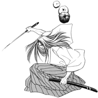
Special Moves
Snowfall Slash |
+slash |
Swallow Swipe |
During
a jump |
Afterimage Attack |
+kick |
Snowfall Kick |
+kick |
Weapon Smash Waza (Move)
Swallow Super Slash |
+AB |
All commands can only be used when the player character is facing right.
Special moves written in red letters can only be used when the character has a weapon.
Nakoruru
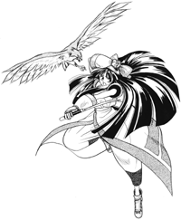
Special Moves
Annu Mutsube |
+slash |
Lela Mutsube |
+slash |
Kamui Ryuse |
+slash |
Amube Yatoro |
+slash |
Mahaha Flight |
+C |
Yatoro Bokku |
While
caught by Mahaha |
Kamui Mutsube |
While
caught by Mahaha |
Mahaha Call |
Without
a weapon |
Triangle Jump |
Jump and reverse joystick direction at the edge of the screen |
Weapon Smash Waza (Move)
Irusuka Yatoro Limse |
+A |
All commands can only be used when the player character is facing right.
Special moves written in red letters can only be used when the character has a weapon.
Special moves written in blue letters can only be used when Mahaha (the falcon) is present.
Genan Shiranui
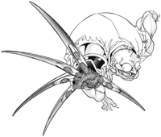
Special Moves
Poison Cloud Puff |
+slash |
Slaughter House Tumble |
+slash |
Blood Grip |
+slash |
Super Shedder |
BCD while incurring damage |
Amazing Shedder |
+BCD |
Triangle Jump |
Jump and reverse joystick direction at the edge of the screen |
Weapon Smash Waza (Move)
Magic Diving Claw |
+AB |
All commands can only be used when the player character is facing right.
Special moves written in red letters can only be used when the character has a weapon.
Earthquake
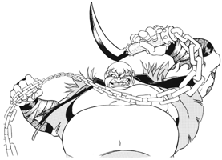
Special Moves
Fat Bound |
While jumping +kick |
Fat Chainsaw |
Continuously hit slash button |
Fat Press |
+slash |
Fat Copy |
+A or B |
Fat Replicator Attack |
+BCD |
Fat Triangle Jump |
Jump and reverse joystick direction at the corner of the screen |
Weapon Smash Waza (Move)
Earth Crunch |
+CD |
All commands can only be used when the player character is facing right.
Special moves written in red letters can only be used when the character has a weapon.
Charlotte
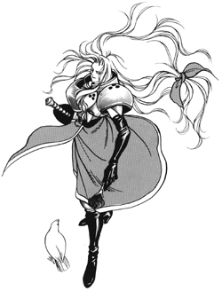
Special Moves
Power Gradation |
+slash |
Splash Fount |
Repeatedly hit slash button |
Tri-Slash |
+slash |
Weapon Smash Waza (Move)
Splash Gradation |
+B |
All commands can only be used when the player character is facing right.
Special moves written in red letters can only be used when the character has a weapon.
Wan Fu
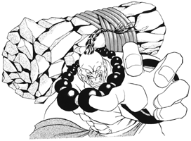
Special Moves
New Confucious Thunder Bomb |
+slash |
Confucious Slash |
+slash |
Confucious Swipe |
+slash |
Exploding Confucious |
+CD |
Weapon Smash Waza (Move)
Wrath of God Blowout |
+B |
All commands can only be used when the player character is facing right.
Special moves written in red letters can only be used when the character has a weapon.
Galford
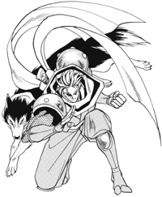
Special Moves
Plasma Blade |
+slash |
Rush Dog |
+slash |
Machine Gun Dog |
+C |
Replica Dog |
+D |
Strike Heads |
Get close to the opponent +kick |
Rear Replicator Attack |
+BCD |
Head Replicator Attack |
Hit BCD while incurring damages |
Shadow Copy |
+A or B |
Triangle Jump |
Jump and reverse joystick direction at the edge of the screen |
Weapon Smash Waza (Move)
Mega Strike Dog |
+D |
All commands can only be used when the player character is facing right.
Special moves written blue letters can only be used when Poppy (the dog) is present.